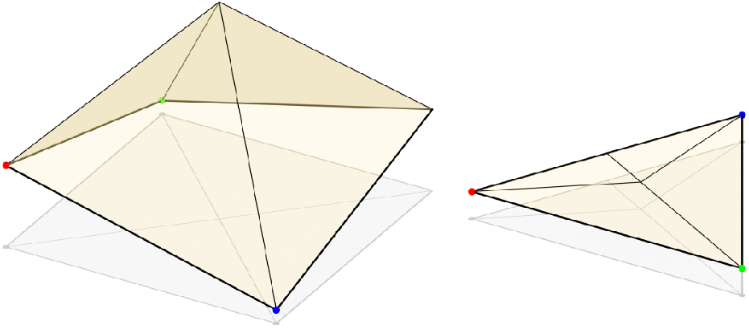

To help understand the functionality of each tool, Graphic images and easy-to-understand language have been used as much as possible without losing important information. If you don't understand the functions, send me an email at

Map a triangle patch to a
